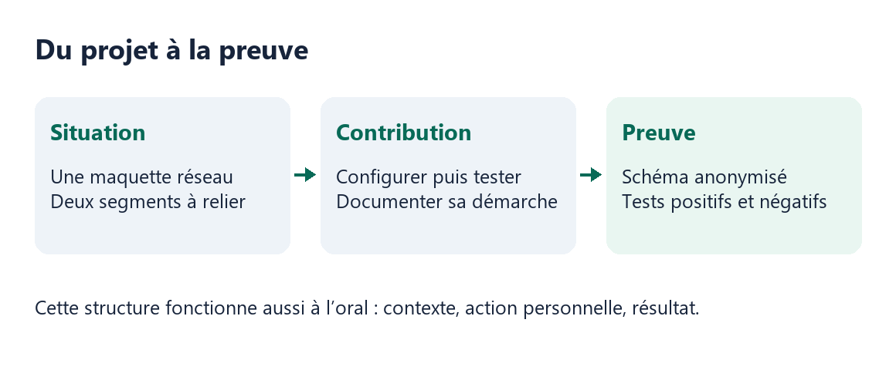

Comprendre le cours
Organiser le parcours du lecteur
Prévois un accès rapide aux projets. Une rubrique Formation peut présenter le parcours et quelques compétences acquises. Utilise des liens dont le texte décrit la destination.
Pour chaque projet, explique le besoin initial, ta tâche, la méthode et le résultat. Un schéma ou un extrait anonymisé peut étayer le résultat, à condition que le lecteur sache quoi y chercher.

Distinguer le résultat collectif et ta contribution
Pour éviter les affirmations vagues, remplace « je connais les VLAN » par un exemple vérifiable. Explique comment tu as testé la séparation et comment tu as interprété la capture.
Sur une publication publique, anonymise les comptes, les adresses propres à une organisation et les informations qui n’aident pas à prouver la compétence.
Préparer la lecture et l’oral
Pour une prise de parole, entraîne-toi à expliquer un projet en moins d’une minute. Prépare un détail à développer si on t’interroge sur un choix.
Pour une page, contrôle les liens et les ancres, la hiérarchie des titres, le texte alternatif des images utiles et l’affichage sur téléphone.
Du cours aux TD et TP
Les exercices sont des compléments construits à partir du mini-site HTML/CSS et du portfolio rendus en SAÉ. Le sujet original n’a pas été retrouvé.
Questions TD & TP
Rédiger une carte de projet à partir d’une réalisation
Exemple d’entraînement. Créer une carte pour un projet de réseau et montrer quelle compétence elle permet de vérifier.
- Écris le besoin et la limite du projet. Présente ensuite une action personnelle que tu peux détailler.
- Ajoute une preuve, par exemple un schéma légendé et le résultat de deux tests. Décris ce que chaque test valide.
- Prépare une version orale d’une minute. Termine avec une piste d’amélioration directement liée au projet.
Vérifier la navigation avant publication
Exemple d’entraînement. Vérifier qu’un visiteur peut atteindre un projet, consulter la preuve et revenir à l’accueil.
- Teste depuis l’accueil sur ordinateur puis sur téléphone. Confirme que chaque bouton a une destination compréhensible.
- Avec Tab, vérifie que le focus est visible et que l’ordre suit le contenu. Ouvre une image ou un fichier de preuve pour contrôler sa lisibilité.
- Après publication, refais le parcours à partir de l’URL publique et vérifie qu’aucune donnée personnelle superflue n’apparaît.